(UFES) O estado do Espírito Santo é um grande produtor de polpa de celulose branqueada. A celulose é um carboidrato fibroso encontrado em todas as plantas, sendo o polissacarídeo mais abundante na natureza, formado pela condensação
de moléculas de:
a) sacarose
b) ribulose
c) maltose
d) glicose
e) ribose
(UFPE) A glicose e a frutose são carboidratos (compostos energéticos) encontrados em diversos alimentos:
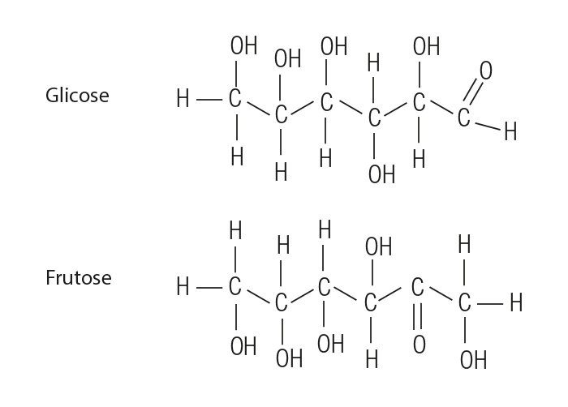
Sendo assim, podemos dizer que:
a) a glicose é um aldeído;
b) a frutose é uma cetona;
c) glicose e frutose são isômeros de função;
d) glicose e frutose são isômeros de posição;
e) glicose e frutose não são isômeros.
(UNIFAP) A glicose (C6H12O6) é um composto químico muito importante para a fisiologia dos seres vivos, por ser o produto do processo da fotossíntese, e a principal fonte de energia do metabolismo animal. Com base na informação
acima, encontre o(s) valor(es) da(s) proposição(ões) correta(s):
(01) A molécula da glicose apresenta cadeia saturada.
(02) A quebra da glicose é chamada de glicólise.
(04) A glicose é uma substância cuja molécula é apolar.
(08) A glicose é classificada como vitamina.
(UFMG) A glicose, C6H12O6, é uma das fontes de energia mais importantes para os organismos vivos. A levedura, por exemplo, responsável pela fermentação do caldo da cana-de-açúcar, alimenta-se da glicose.
a) Na decomposição da glicose pela levedura, a primeira reação que ocorre é a conversão da glicose em frutose:
Cite três funções orgânicas que podem ser encontradas em uma ou em ambas as estruturas desses compostos.
b) A levedura utiliza a energia liberada na fermentação e produz etanol e dióxido de carbono. Considerando- se que a fermentação é anaeróbica, isto é, ocorre na ausência de oxigênio,
escreva a equação balanceada da reação de fermentação da glicose.
(UFAM) Considere a estrutura química desta frutose e marque a única afirmação incorreta:
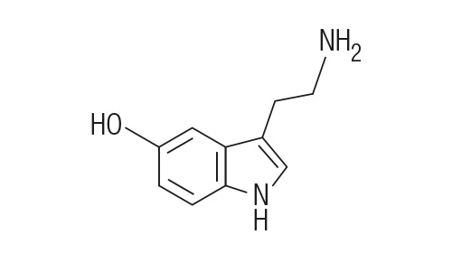
a) não apresenta atividade óptica, apenas isomeria geométrica;
b) sua fórmula molecular é C6H12O6;
c) possui atividade óptica, pois apresenta três centros quirais;
d) é um açúcar classificado como uma ceto-hexose;
e) apresenta grupos funcionais característicos de álcool e cetona.
(UFS – SE) Examine as equações químicas e os compostos nelas presentes, para analisar as proposições que seguem.
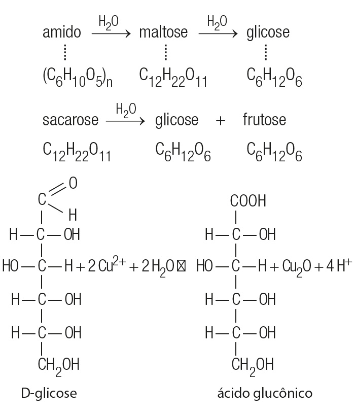
a) A glicose tem propriedades redutoras, pois reduz Cu(II) a Cu(I).
b) A D-glicose deve ser um dos enantiômeros; o outro é a frutose.
c) O amido deve ser um polímero cujo monômero é a glicose.
d) A frutose deve ser um isômero da glicose.
e) Na fórmula estrutural da glicose, identificam-se seis carbonos assimétricos.
(UFRGS – RS) A frutose, cuja estrutura química é representada abaixo, é um açúcar, monossacarídeo usado como adoçante em muitos produtos de consumo humano. Mel e frutas são as principais fontes de frutose. Industrialmente, a
frutose é produzida pela fermentação enzimática do melado de milho. Com relação à frutose, são feitas as seguintes afirmações:
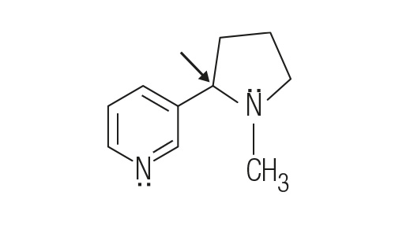
Sua fórmula molecular é C6H12O6.
Apresenta dois centros quirais.
Apresenta atividade óptica.
É um açúcar caracterizado como aldo-hexose.
Quais estão corretas?
a) Apenas I e III.
b) Apenas II e IV.
c) Apenas I, II e III.
d) Apenas II, III e IV.
e) I, II, III e IV.
(UNESP – SP) Os monossacarídeos são os carboidratos mais simples, onde o número de átomos de carbono pode variar de cinco, como nas pentoses, a seis carbonos, como nas hexoses. Os monossacarídeos glicose, frutose, manose e
galactose estão representados a seguir:
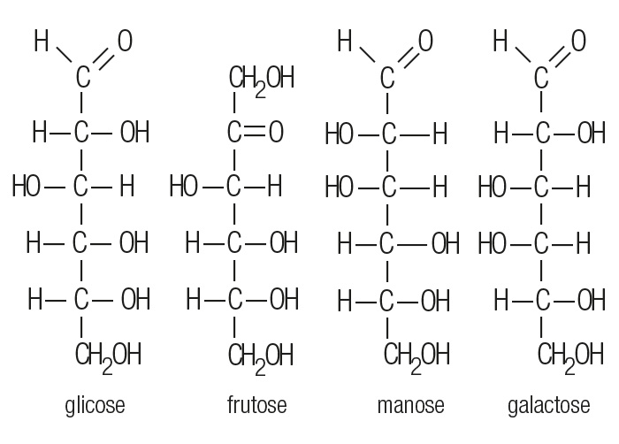
Os grupos funcionais presentes nessas moléculas são:
a) ácido carboxílico, poliol e aldeído;
b) poliol, aldeído e cetona;
c) poliol, éster e cetona;
d) éster, aldeído e cetona;
e) poliol, ácido carboxílico e cetona.
(UNIOESTE – PR) A glicose e a frutose são dois importantes açúcares amplamente encontrados na natureza. Suas estruturas químicas são representadas abaixo:
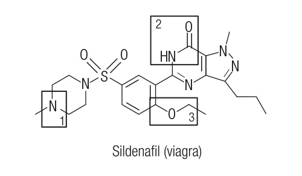
A respeito da glicose e da frutose são feitas as seguintes afirmações:
A glicose é um hidrocarboneto.
A frutose apresenta uma função cetona.
Glicose e frutose são isômeros.
A oxidação parcial da glicose fornece um ácido carboxílico.
A redução da frutose fornece um ácido carboxílico.
São verdadeiras somente as afirmações:
a) II, IV e V.
b) I, II e III.
c) II, III e IV.
d) II, IV e V.
e) I, III e IV.
(UFS – SE) Açúcares, pela ação de micro-organismos que produzem enzimas, são transformados em outros açúcares ou, então, em álcoois (fermentação alcoólica). É assim que:
a) sacarose, um dissacarídeo, pode se transformar em monossacarídeos, pela ação de enzimas;
b) na fermentação, quando há produção de etanol, o outro produto da reação é o monóxido de carbono;
c) o vinagre, solução aquosa de ácido etanoico, pode provir da oxidação do etanol do vinho;
d) o glicerol (propanotriol) é obtido, dessa maneira, a partir do amido.
(MACKENZIE – SP) O aspartame é um dipeptídeo cristalino, inodoro, de baixa caloria e com uma doçura de 180 a 200 vezes à da sacarose, que é um dissacarídeo formado por glicose e frutose. Abaixo estão representadas as fórmulas
estruturais da sacarose e do aspartame.
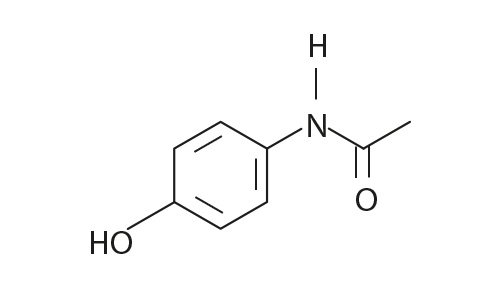
A respeito dessas moléculas, considere as afirmações I, II, III, IV e V.
O aspartame possui os grupos funcionais ácido carboxílico, amina, cetona e éster.
A sacarose possui uma ligação peptídica unindo a glicose e a frutose.
Na molécula do aspartame, existe somente um átomo de carbono terciário.
A sacarose é um hidrocarboneto de fórmula molecular C12H22O11.
A molécula do aspartame possui atividade óptica.
Estão corretas, somente:
a) I, III e V.
b) I, IV e V.
c) III e V.
d) II, III e IV.
e) I, II e III.
(UPE) A obesidade pode ser provocada pela ingestão excessiva tanto de massas como de doces. Isso ocorre, porque esses alimentos possuem em maior quantidade:
a) glicerina;
b) lipídios;
c) carboidratos;
d) proteínas;
e) vitaminas e sais minerais.
(UFPR) A cana-de-açúcar, trazida da Índia por colonizadores portugueses, continua gerando trabalho, riqueza e divisas para o país. Que alternativa não contém produto obtido de cana-de-açúcar?
a) Cerveja, bebida que contém, entre outros ingredientes, 5% (°GL) de álcool etílico.
b) Caldo de cana ou garapa, bebida altamente energética.
c) Melado, alimento viscoso de alto valor energético.
d) Energia elétrica produzida por cogeração em uma indústria sucroalcooleira.
e) Gasolina brasileira, mistura de combustíveis que contém aproximadamente 25% (°GL) de etanol.
(UNIFACS – BA)
Geralmente o termo dietético é aplicado a produtos isentos de sacarose. Embora o pão francês possa ser vendido nas padarias, sem açúcar, essa substância é fundamental no processo de fabricação desse alimento, uma vez que serve
de nutriente para o fermento biológico. Um quilograma de massa para fazer pão contém cerca de 30,0 g de sacarose, além de outros ingredientes, como farinha de trigo – rica em amido e glúten, um tipo de proteína –, sal, água e
fermento biológico.
(CUNHA, 2008, p. 82)
Considerando-se as informações do texto e as equações químicas que representam, resumidamente, o processo de fabricação do pão francês, é correto afirmar:
a) O pão francês, preparado a partir de 50,0 g de massa de fazer pão, é dietético porque, durante a fermentação, consome 1,50 g de sacarose e libera 429 mL de CO2(g) a 25 °C e 1,0 atm.
b) O glúten é uma proteína complexa solúvel em água, que resulta da esterificação de ácidos graxos.
c) O amido é uma macromolécula formada a partir da condensação de moléculas de sacarose.
d) A quantidade de matéria de etanol produzida a partir de 180,0 g de glicose é 46,0 g.
e) A fermentação de glicose é um processo endotérmico, e a equação química I representa uma reação de decomposição.
(EAFA – ES) No Brasil, o processo utilizado para se obter álcool etílico (etanol) é a fermentação de hidratos de carbono (provenientes da cana-de-açúcar). O esquema abaixo representa tal processo.
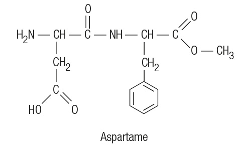
Com base na informação e no esquema apresentados e em seus conhecimentos, assinale a alternativa correta.
a) O principal monossacarídeo presente na garapa (caldo de cana) é o C12H22O11 (sacarose).
b) A fermentação do melaço é provocada por catalisadores biológicos, produzidos por microrganismos (leveduras).
c) Das reações enzimáticas abaixo, somente a 1.ª é a que caracteriza a fermentação.
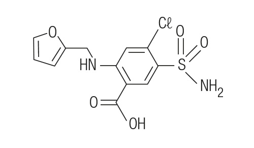
d) Etanol 96°GL (96 graus Gay-Lussac) é uma mistura contendo 96% de água e 4% de etanol.
(UFSC)
O Brasil atualmente defronta-se com a perspectiva de um significativo aumento na demanda por etanol combustível. Esta previsão sustenta-se em certas realidades de mercado, como:
a) aumento do consumo interno de álcool hidratado devido ao sucesso dos automóveis flexifuel no mercado de veículos automotivos leves.
b) expansão das exportações brasileiras de etanol em função do crescente interesse mundial pela mistura deste à gasolina, como forma de diminuir as emissões de gases de efeito estufa (GEE).
Um caminho para solucionar o problema seria ampliar a produtividade de litros de álcool por hectare de cana plantada, aproveitando integralmente a biomassa da planta para produzir etanol. Essa rota recebe o nome de etanol
lignocelulósico ou de 2ª geração. Para obtermos etanol lignocelulósico são necessários, basicamente, dois processos: a hidrólise dos polissacarídeos em açúcares simples e a fermentação destes em etanol.
Com base nas informações acima, assinale a(s) proposição(ões) correta(s).
(01) Hidrólise significa quebra pelo hidrogênio.
(02) A hidrólise da celulose pode ser representada por:
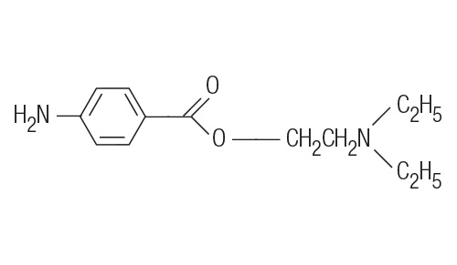
(04) Na molécula de glicose existe apenas um centro quiral.
(08) O aumento da produtividade de álcool por hectare pode ser conseguido pela fermentação da molécula de açúcar liberada pela hidrólise da lignocelulose presente no bagaço da cana.
(16) A fermentação da glicose para geração de etanol pode ser representada pela equação corretamente balanceada: C4H12O2 → 2 C2H5OH.
(32) A molécula de etanol produzida pelo processo tradicional é diferente da molécula de etanol produzida pela fermentação do açúcar proveniente da lignocelulose.
(UERJ) Os resultados da pesquisa apoiam a ideia de que a dieta adequada para a prevenção de doenças coronarianas deve, preferencialmente, conter gorduras ricas em ácidos graxos de cadeia do tipo:
a) saturada
b) alicíclica
c) ramificada
d) insaturada
(UNEMAT – MT) Os lipídios são moléculas de gordura encontradas nos seres vivos, exercendo diversas funções, como reserva de energia, proteção mecânica e isolamento térmico. Identifique a afirmativa incorreta sobre os lipídios.
a) Nas gorduras animais predominam ácidos graxos de cadeias insaturadas.
b) Óleos são líquidos em temperatura ambiente devido à predominância de ácidos graxos insaturados.
c) Ácidos graxos reagem com base forte, formando um sal.
d) A produção de margarina ou gordura vegetal para uso em alimentos industrializados é um processo de hidrogenação de óleos vegetais insaturados.
e) Ácidos graxos podem produzir sabão, uma molécula utilizada na produção de xampus e detergentes.
(UECE) As gorduras trans são um tipo especial de ácido graxo, formado a partir de ácidos graxos insaturados. Elas elevam o nível da lipoproteína de baixa densidade no sangue (LDL ou “colesterol ruim”). Nem sempre a
indicação do rótulo Zero Trans é verdadeira porque a Anvisa tolera até 0,2 g de gordura trans por porção. Sobre ácidos graxos, assinale o correto.
a) Ácidos graxos ou ácidos gordos são ácidos de cadeia normal que apresentam o grupo carbonila (–COOH) ligado a uma longa cadeia alquílica, saturada ou insaturada.
b) Os ácidos graxos essenciais são aqueles produzidos bioquimicamente pelos seres humanos.
c) Os ácidos graxos insaturados são mais comumente encontrados na gordura animal, enquanto os saturados são mais encontrados em gordura vegetal.
d) São encontrados em materiais elaborados pelos organismos denominados lipídios, que são biomoléculas insolúveis em água.
(UCS – RS) Os óleos vegetais de soja, milho, girassol e oliva são glicerídios líquidos em que predominam ésteres de ácidos graxos insaturados etênicos. Industrialmente, por meio da reação de hidrogenação catalítica, esses líquidos
são transformados em compostos sólidos, produzindo, assim, os diversos tipos de margarina. Esse processo é representado a seguir:
Óleo(ℓ) + H2(g) $$\rightarrow$$ gordura(s)
Em relação às características dessa reação, é correto afirmar que:
a) óleos são ésteres com ligações simples, as quais ocorrem por um processo de oxidação energética;
b) a margarina é fabricada pela oxidação dos óleos;
c) as gorduras existentes nas margarinas possuem predominantemente ligações duplas e triplas;
d) os ácidos graxos das margarinas apresentam predominantemente ligações simples;
e) a hidrogenação catalítica consiste em transformar ligações simples em duplas.
(ENEM) As “margarinas” e os chamados “cremes vegetais” são produtos diferentes, comercializados em embalagens quase idênticas. O consumidor, para diferenciar um produto do outro, deve ler com atenção os dizeres do rótulo,
geralmente em letras muito pequenas. As figuras que seguem representam rótulos desses dois produtos:
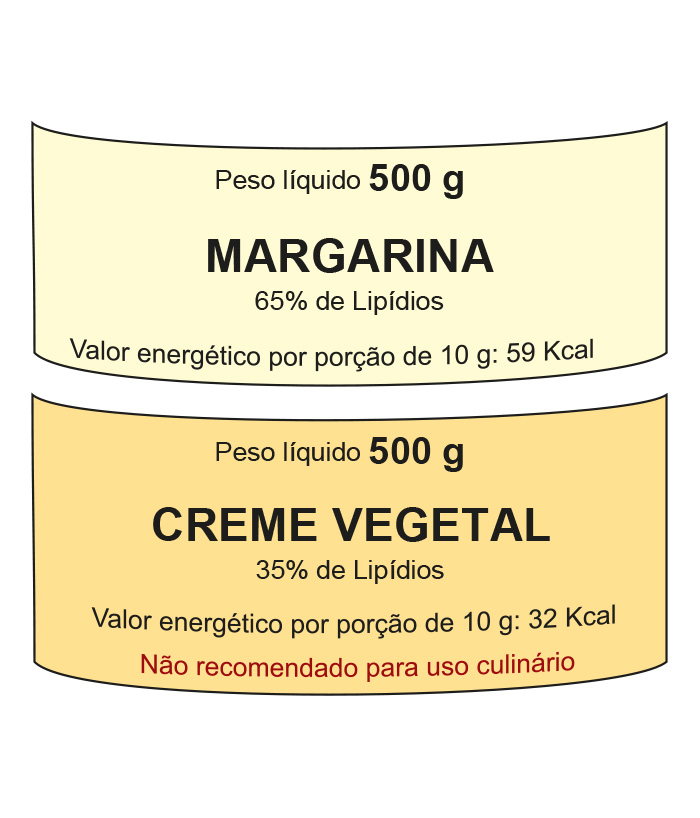
Uma função dos lipídios no preparo das massas alimentícias é torná-las mais macias. Uma pessoa que, por desatenção, use 200 g de creme vegetal para preparar uma massa cuja receita pede 200 g de margarina, não obterá a consistência
desejada, pois estará utilizando uma quantidade de lipídios que é, em relação à recomendada, aproximadamente:
a) o triplo
b) o dobro
c) a metade
d) um terço
e) um quarto
(ACAFE – SC)
A dieta tradicional chinesa é composta de verduras, pouca carne e arroz (fonte de amido). Em geral, os pratos do norte são oleosos, sem ser enjoativos, e os sabores do vinagre e do alho tendem a ser mais acentuados. As massas
desempenham um papel importante na cozinha do norte: talharim, pastéis do tipo ravióli, bolinhos de carne e pão assado no vapor são prazeres favoritos feitos de farinha.
Adaptado de: <http://mundooriental.vilabol.uol.com.br/china/china_cul.htm>.
Com relação ao tema acima, e seus conhecimentos, assinale a alternativa correta.
a) O amido é um polímero de adição, obtido a partir de aminoácidos.
b) O vinagre é uma solução aquosa diluída que contém o ácido acético 100% ionizado.
c) A sacarose, o açúcar comum comercial, possui fórmula molecular C6H12O6.
d) A banha e a gordura da carne são gorduras saturadas.
(UFCSPA – RS) O colesterol é um esterol encontrado nas membranas celulares, e sua estrutura está representada abaixo.
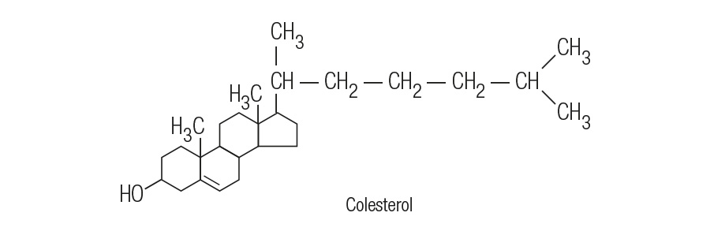
Sobre ele é correto afirmar:
a) sua fórmula molecular é C27H46O;
b) é um aminoácido;
c) é um fenol;
d) é também sintetizado nos organismos vegetais;
e) nenhuma das alternativas acima está correta.
(EVANGÉLICA – PR) As gorduras devem fazer parte de nossa alimentação, pois são elas nossa fonte energética, desde que se encontrem no grupo certo, que aumenta o HDL e diminui o LDL.
Alguns tipos de gorduras saturadas podem obstruir artérias e diminuir o fluxo de sangue oxigenado.
As gorduras monoinsaturadas ômega-6 e ômega-3 abaixam o LDL e o colesterol total.
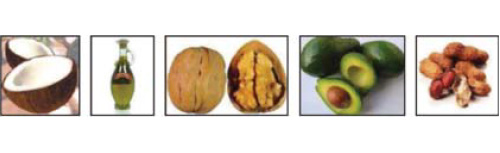
As gorduras transaturadas são obtidas a partir da hidrogenação de gorduras saturadas, não trazem nenhum benefício e aumentam o colesterol.
Considerando os principais componentes das gorduras e óleos, avalie as afirmativas.
a) Lipídios são óleos e gorduras elaborados a partir de ácidos graxos e glicerol.
b) O ácido graxo de fórmula molecular C12H24O2 apresenta cadeia carbônica insaturada.
c) Uma molécula de triglicerídeo é obtida pela reação entre uma molécula de glicerol e uma molécula de ácido graxo.
d) A gordura animal é um composto alimentar rico em triglicerídios saturados.
e) A obtenção da margarina, conforme a equação abaixo, envolve uma reação de adição.
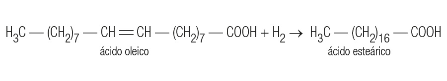
(UNESP – SP) O folheto de um óleo para o corpo informa que o produto é preparado com óleo vegetal de cultivo orgânico e óleos essenciais naturais. O estudo da composição química do óleo vegetal utilizado na fabricação desse produto
permitiu identificar um éster do ácido cis,cis-9,12-octadecadienoico como um de seus principais componentes.
Escreva a fórmula estrutural completa do ácido cis,cis-9,12-octadecadienoico e indique como essa substância pode ser obtida a partir do óleo vegetal.
(UECE) Pesquisadores informam que os ácidos ômega-3 encontrados nas nozes, nas castanhas, nos peixes, nos óleos de canola e de soja, têm propriedades anti-inflamatórias e evitam a formação de coágulos sanguíneos diminuindo o risco
de ataques cardíacos e de arritmia cardíaca. Sobre ácidos orgânicos e lipídios podemos afirmar corretamente que:
a) os ácidos ômega-3 são chamados essenciais porque podem ser sintetizados pelo organismo;
b) os ácidos graxos possuem mais de um grupo carboxila ligados a uma cadeia alquílica;
c) dos ácidos graxos derivam os lipídeos, que são insolúveis na água e solúveis em álcool, benzina, éter, clorofórmio e acetona;
d) os hormônios sexuais testosterona e progesterona são fosfolipídios insolúveis nas gorduras.
(UNAMA – PA) O biodiesel é um combustível biodegradável derivado de fontes renováveis, que pode ser obtido por diferentes processos, tais como o craqueamento, a esterificação ou pela transesterificação. Pode ser produzido
a partir de gorduras animais ou de óleos vegetais, existindo dezenas de espécies vegetais no Brasil que podem ser utilizadas, tais como mamona, dendê (palma), girassol, babaçu, amendoim, pinhão manso e soja, dentre outras.
O biodiesel substitui total ou parcialmente o óleo diesel usado em caminhões, tratores, camionetas, automóveis, etc. A reação de transesterificação está abaixo representada.
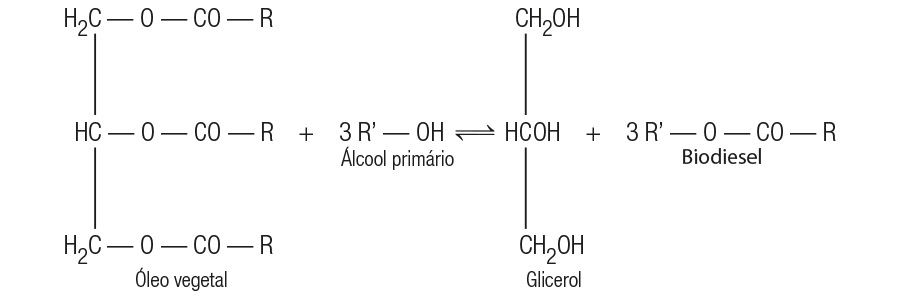
Analise as afirmativas feitas sobre as estruturas do processo.
O óleo vegetal e o glicerol pertencem à mesma função orgânica.
O glicerol apresenta suas moléculas unidas através de ligações por ponte de hidrogênio.
Todas as substâncias representadas são de natureza polar.
Um dos produtos da reação é um éster orgânico.
Estão corretas apenas:
a) I e IV.
b) II e III.
c) II e IV.
d) I e III.
(UFSJ – MG) O biodiesel e o etanol são exemplos de biocombustíveis, sendo o primeiro um substituto para o óleo e o segundo, para a gasolina. A produção de biodiesel tem por base a reação química entre um triglicerídeo e um álcool,
conforme representada abaixo:
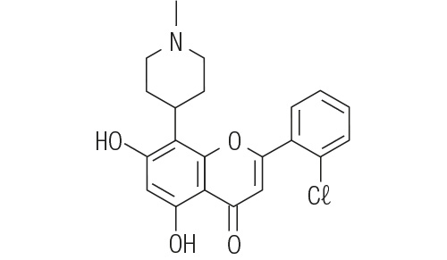
Tendo em vista essas informações, analise as afirmativas abaixo.
O uso do biodiesel oferece vantagens para o meio ambiente em comparação com o uso do óleo diesel, como a redução da emissão de compostos de enxofre para a atmosfera.
O álcool combustível usado no Brasil é o etanol, no qual R = CH3CH2, cuja produção também envolve a reação química mostrada acima, só que no sentido inverso.
A reação de síntese do biodiesel é chamada de transesterificação e pode ser catalisada pela soda cáustica.
O glicerol é um subproduto da síntese do biodiesel e é também o principal constituinte de álcool comercialmente vendido na forma de gel.
A partir dessa análise, estão corretas apenas as afirmativas:
a) I e III.
b) II e IV.
c) I e IV.
d) II e III.
(UFT – TO) A disponibilidade de fontes de energia é indispensável para o desenvolvimento do mundo. No século XVIII, a fonte predominante foi o carvão, seguido pelo petróleo nos séculos seguintes. Há grande consenso entre analistas
de que o século XXI será da agroenergia. No Brasil, biodiesel é o biocombustível derivado de biomassa para uso em motores a combustão interna com ignição por compressão ou, conforme regulamento para outro tipo de geração de
energia, que possa substituir parcial ou totalmente combustível de origem fóssil.
Considere as seguintes afirmações sobre os biocombustíveis:
o uso direto de óleos vegetais como combustíveis para motores é aconselhável devido a sua alta viscosidade, maior densidade e baixa volatilidade;
é um combustível renovável, biodegradável, que apresenta menor emissão de poluentes, maior ponto de fulgor e maior lubricidade quando comparado ao óleo mineral ou diesel;
pode ser produzido a partir de gorduras animais ou de óleos vegetais, existindo dezenas de espécies vegetais oleaginosas do Brasil que podem ser utilizadas, tais como mamona, dendê, girassol, babaçu, amendoim, pinhão manso e
soja; por diferentes processos tais como o craqueamento, a esterificação ou pela transesterificação;
o esquema abaixo corresponde a uma reação para obtenção de biodiesel.
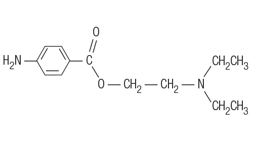
Está correto o que se afirma em:
a) II e III apenas.
b) I, II e III apenas.
c) I e IV apenas.
d) I, II, III e IV.
(UFMG) As moléculas dos triglicerídeos, que são a maior reserva de energia em animais, resultam da esterificação de uma molécula de glicerol (1,2,3-propanotriol) com três moléculas de ácidos graxos, conforme exemplifica a
estrutura:
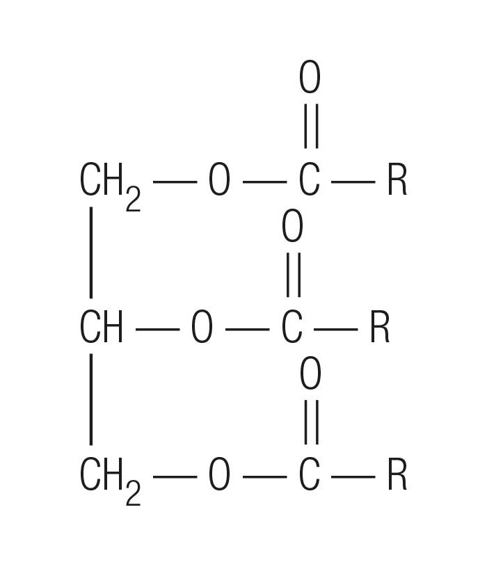
a) Escreva a equação balanceada da reação de hidrólise alcalina completa de um triglicerídeo, usando KOH como reagente.
b) Os triglicerídeos fornecem uma grande quantidade de energia nas reações oxidativas do metabolismo, pois têm muitos átomos de carbono reduzidos. Escreva a estrutura de dois compostos que
podem ser obtidos pela oxidação do glicerol e que mantêm a cadeia de três átomos de carbono.
(UFVJM – MG) Os patos e outras aves aquáticas possuem um material oleoso em suas penas que as protegem do contato direto com a água. Isso provoca a formação de uma grande quantidade de pequenas bolhas de ar, fazendo com que os
patos flutuem. Porém, quando a água está poluída com detergente não biodegradável, esse material oleoso é dissolvido, desaparecem as bolhas de ar e as penas ficam encharcadas fazendo como que o pato afunde e morra afogado.
Substâncias com propriedades detergentes (sabões e detergentes) caracterizam-se por terem em suas moléculas um grupo hidrofílico, capaz de formar fortes ligações com a água, e um grupo hidrofóbico, geralmente, uma cadeia carbônica
longa.
Com base nessas informações, é incorreto afirmar que:
a) a parte da molécula de sabão ou detergente que se fixa à gordura é de natureza apolar e a parte que se liga à molécula de água tem caráter polar;
b) a substância
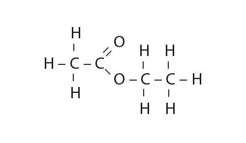
apresenta propriedades detergentes;
c) a substância
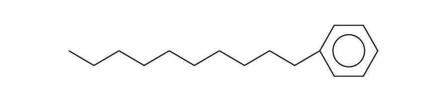
apresenta propriedades detergentes;
d) os sabões são obtidos a partir da reação de saponificação, usando como matéria-prima óleos e gorduras.
(UEM – PR) Considerando-se a molécula representada na fórmula química abaixo, é correto afirmar que esse tipo de estrutura é precursor de:
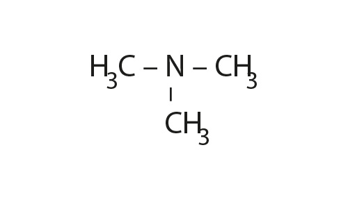
a) carboidratos;
b) ácidos graxos;
c) proteínas;
d) vitaminas;
e) glicídios.
(UEM – PR) A ligação peptídica é uma:
a) ligação covalente;
b) ligação dissulfídrica;
c) ligação iônica;
d) ligação metálica;
e) ligação de hidrogênio (ponte de hidrogênio).
(UFES) A molécula abaixo é classificada como:
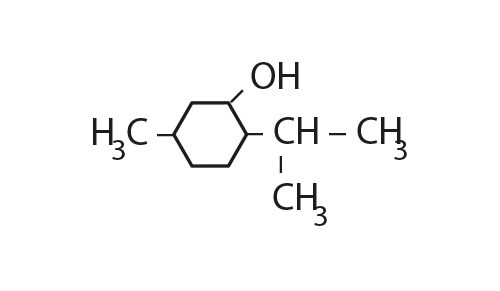
a) dipeptídio
b) tripeptídio
c) tetrapeptídio
d) pentapeptídio
e) hexapeptídio
(EMESCAM – ES) As cerca de 20 unidades constituintes fundamentais da estrutura das proteínas apresentam em comum as funções orgânicas:
a) cetona e aldeído;
b) fenol, amida e álcool;
c) tiol, álcool e éster;
d) amina e ácido;
e) imina, éter e aldeído.
(FMTM – MG) O Prêmio Nobel de Química de 2004 foi dado a pesquisadores americanos e israelenses que estudaram como o sistema imunológico do corpo humano isola proteínas indesejadas. As proteínas são macromoléculas presentes em
todas as células, formadas a partir de aminoácidos, representados pela fórmula geral:
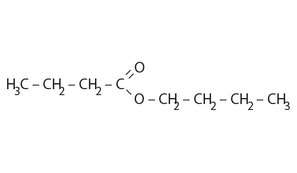
Os aminoácidos se polimerizam originando proteínas por meio da formação de:
a) grupos amida e liberação de água;
b) ésteres e liberação de amônia;
c) ligações de hidrogênio entre os grupos N – H e N – H;
d) ligações de hidrogênio entre os grupos O – H e O – H;
e) ligações de hidrogênio entre os grupos N – H e O – H.
(UNCISAL – AL) Um analgésico natural, muito mais poderoso do que a morfina, foi identificado por um grupo de cientistas franceses. Os pesquisadores isolaram da saliva humana a substância, que se trata de um pequeno peptídeo, a qual
denominaram opiorfina. Ao administrarem a opiorfina em ratos, o resultado foi a supressão da sensação de dores, tanto para inflamações induzidas quimicamente quanto para casos de dores físicas agudas. Nos dois casos, as doses
administradas de opiorfina, de 1 mg/kg, apresentaram o mesmo efeito que as de 3 a 6 mg/kg de morfina. No entanto, as pesquisas sobre essa substância deverão ser aprofundadas, antes de se avaliar seu possível uso em seres humanos. A
formação de um peptídeo, através de uma ligação peptídica, é representada na equação:
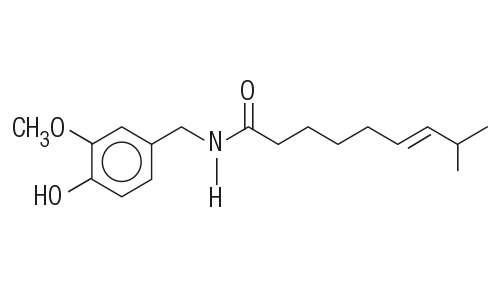
Os grupos funcionais dos compostos I e II, envolvidos na formação da ligação peptídica e o grupo funcional formado no peptídeo (III) são, respectivamente:
a) álcool, amina e amida;
b) álcool, amida e amina;
c) aldeído, amida e amina;
d) ácido carboxílico, amina e amida;
e) ácido carboxílico, amida e amina.
(UFMG) Os aminoácidos são os blocos construtivos das proteínas, que são agentes indispensáveis para as funções biológicas. Os aminoácidos têm como fórmula geral a estrutura:
a) As cadeias laterais, R, dos aminoácidos podem ser classificadas como apolares ou polares:
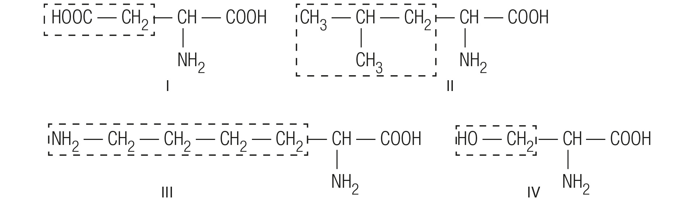
Considerando as estruturas das cadeias laterais, R, dos aminoácidos I, II, III e IV, indique qual deles apresenta a cadeia lateral apolar.
b) A formação de proteínas e peptídeos ocorre pela ligação covalente entre aminoácidos, que leva à formação de um grupo amida. Escreva a estrutura de um peptídeo formada pela ligação entre
os aminoácidos II e IV, em qualquer ordem.
(PUCRS) Quando uma célula produz uma proteína, a cadeia de polipeptídio dobra-se espontaneamente para assumir certa forma. Um dos dobramentos dessa cadeia polipeptídica envolve muitas forças de interação entre várias cadeias
laterais de aminoácidos, conforme exemplificado no esquema:
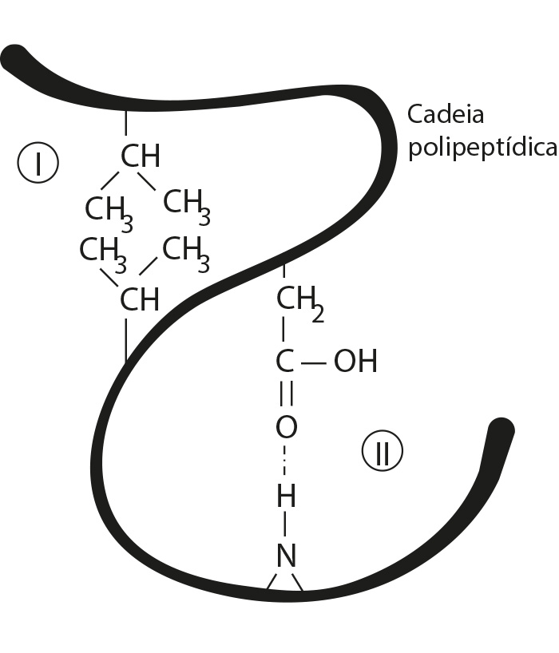
Os tipos de forças de interação que ocorrem em (I) e (II) são, respectivamente:
a) dipolo-dipolo e ligação de hidrogênio;
b) ligação de hidrogênio e dipolo-dipolo;
c) dipolo induzido-dipolo induzido e ligação de hidrogênio;
d) dipolo induzido-dipolo induzido e dipolo-dipolo;
e) dipolo induzido-dipolo e dipolo-dipolo.
(UFES) Proteínas são polímeros naturais formados pela condensação de moléculas de α-aminoácidos. A fórmula geral dos α-aminoácidos apresenta um grupo amino, uma cadeia lateral, um átomo de hidrogênio e um grupo carboxila, ligados a
um mesmo átomo de carbono. A leucina é um α-aminoácido que possui como cadeia lateral o radical isobutila. Outro α-aminoácido, a fenilalanina, possui como cadeia lateral o radical fenila.
a) Escreva a estrutura de um dipeptídeo formado por esses dois aminoácidos (leucina e fenilalanina) e circule, nessa estrutura, os átomos envolvidos na formação da ligação peptídica.
b) Escreva as estruturas predominantes quando a fenilalanina é colocada em meio aquoso fortemente básico (pH = 14,0) e a leucina é colocada em meio aquoso fortemente ácido (pH = 1,0).
c) Calcule o número de estereoisômeros opticamente ativos para a leucina.
(UFMA) Proteínas são macromoléculas formadas por reações de condensação de a-aminoácidos, através de ligações peptídicas. A partir da combinação dos α-aminoácidos a seguir, escreva duas fórmulas estruturais das possíveis proteínas
formadas: